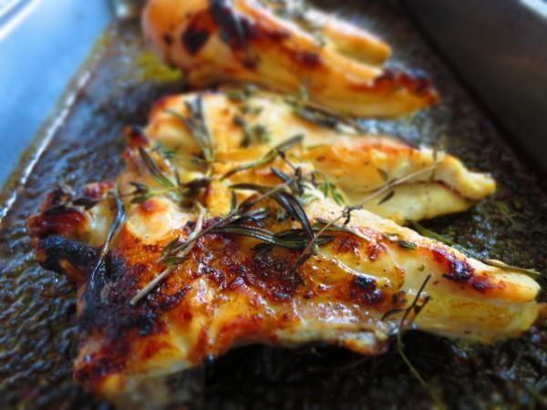
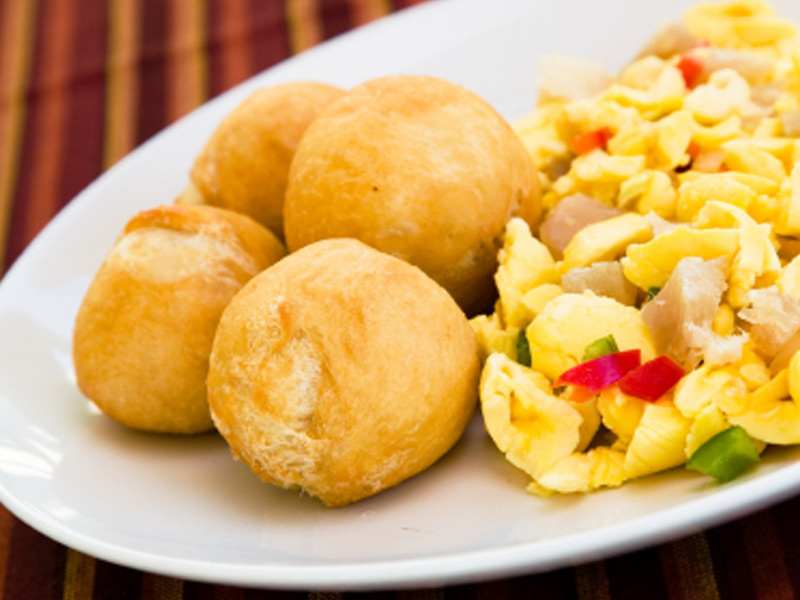
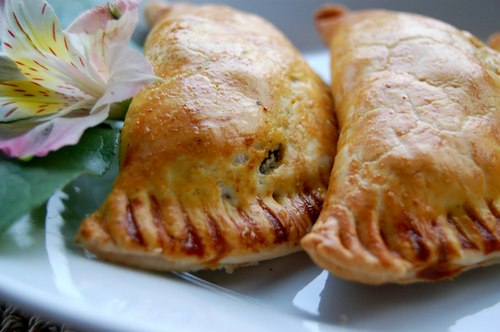
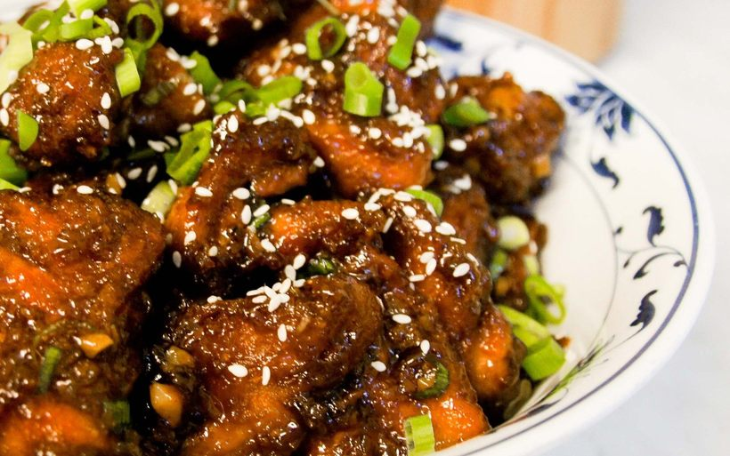
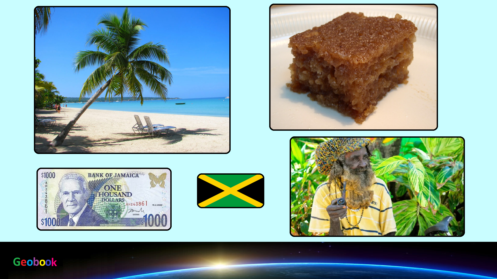

____
Традиционная еда
Цыплёнок по-ямайски — Ямайцы используют очень много специй, но стоит попробовать ямайский соус, и вы поймете, что никогда не ели настолько острого блюда. Смесь специй из трав, растущих на острове, например, очень острый желтый перец чили, душистый перец, корица и мускат, добавляют в мясо цыплёнка.

Аки и соленая рыба — Традиционный завтрак на Ямайке вначале может показаться невкусным, но после того, как вы попробуете его несколько раз, уверяю, от него будет невозможно оторваться. Завтрак напоминает яичницу-болтунью. Он состоит из трески и аки, тропического фрукта. Аки не совсем обычный фрукт. У него пресный вкус, но он хорошо идет вместе с соленой треской, которую готовят с луком и перцем.

Ямайский пирожок — Традиционный пирожок имеет острый вкус с мясной начинкой, напоминает блинчик с мясом или самсу. Купите пирожок с лобстером, свининой, курицей, или даже вегетарианский вариант, с карри и островными приправами. Пахнет просто восхитительно. Часто подается как гарнир.

Тушеное мясо с зеленью — Зеленолистные овощи на Ямайке – то же самое, что и шпинат в Америке. Питательные и не такие горькие как шпинат. Их часто используют в рецептах готовки – начинают пироги для гарнира или готовят полезный сок. Но лучше всего зелень идет как ингредиент для традиционного Ямайского пряного супа с мясом и овощами.

____
